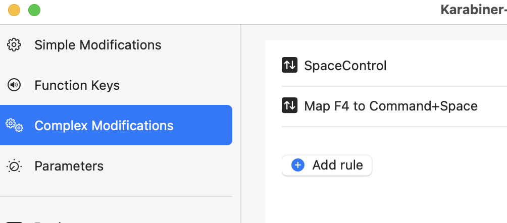

Remap F4 to Raycast, Alfred (cmd + space)

On Mac keyboard, there is F4 key which opens Spotlight1 by default. I use Raycast2 a lot instead of Spotlight and wanted to remap F4 to Raycast.
There is an app called Karabiner-Elements3 which can be used to remap keys. After the app is installed, we can use this rule4 called Map F4 to cmd+space.
You can import the rule from the above URL directly. Once the rule is imported & enabled, F4 will be remapped to cmd + space as shown in the video below.

Chillar Anand
A blog about python, careers & life.
To contact me, send a message here.